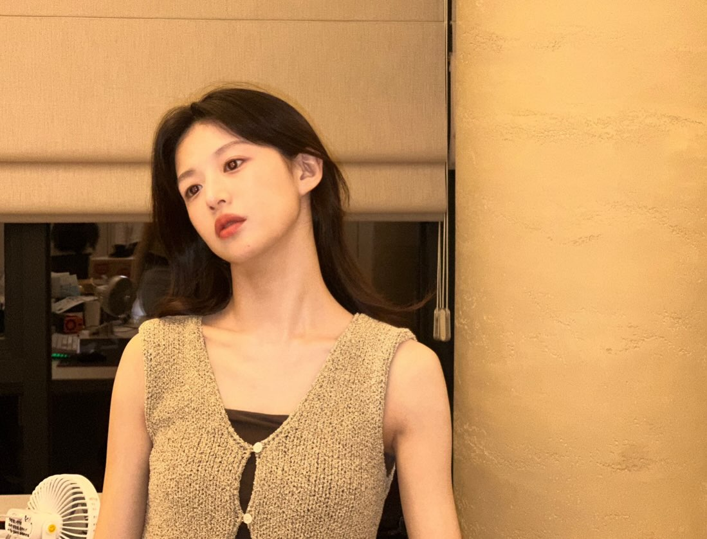
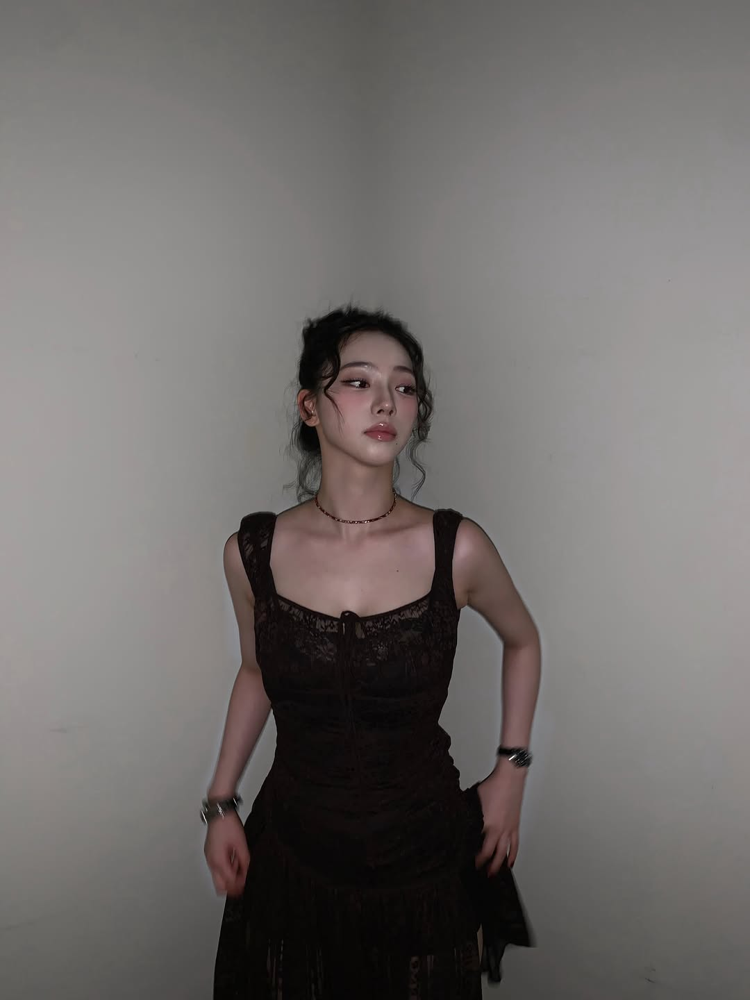
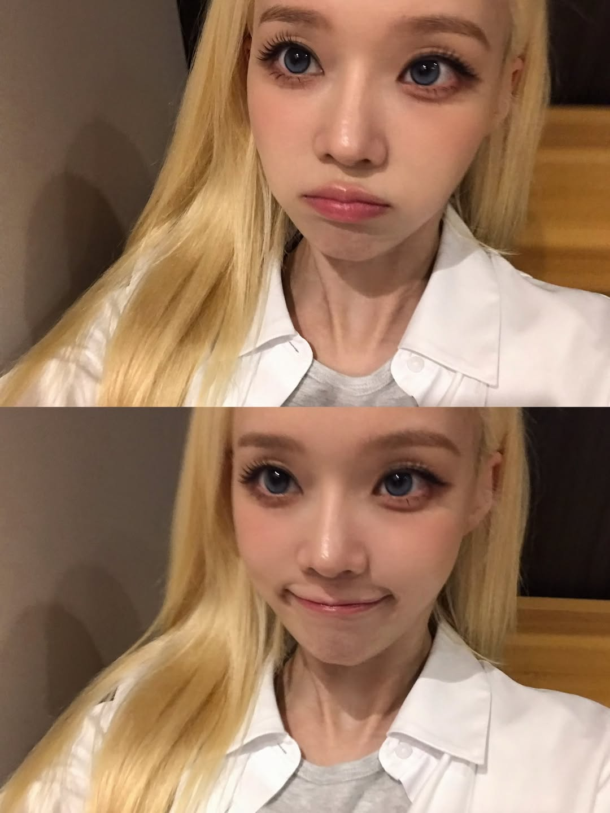
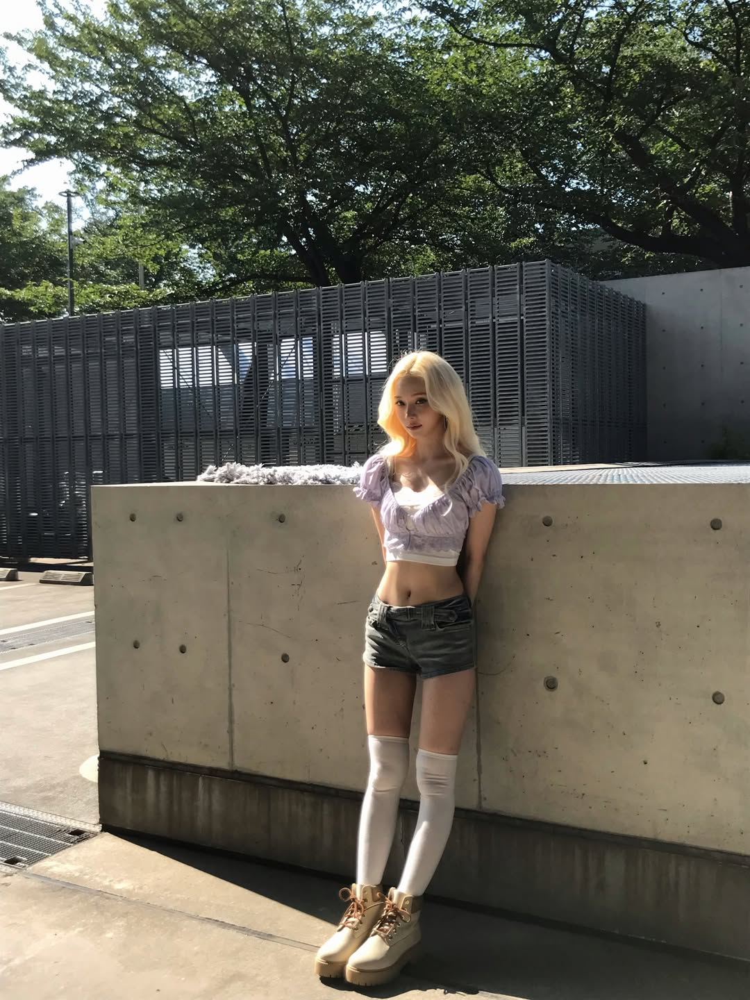

Định vị & offer
Audience, mechanism, proof, message ladder, funnel và measurement contract.
References → Art Direction → 4 Variants → Campaign
Gửi vài ảnh tham chiếu và mô tả điều bạn muốn. Skill tách identity khỏi style, chọn GPT Image 2 hoặc Nano Banana, rồi trả một ảnh hoàn thiện hoặc 4–5 biến thể có chủ đích cùng marketing và content system.


Lọc theo vai trò thị giác, mở post gốc để xem ngữ cảnh, rồi gán từng ảnh vào đúng nhiệm vụ. Đây là nguồn phân tích, không phải asset campaign và không ngụ ý endorsement.
 Warm close-upmakeup · candid · lighting
Warm close-upmakeup · candid · lighting
 Retail candidcandid · pose · full body
Retail candidcandid · pose · full body
 Dining actioncandid · pose · editorial
Dining actioncandid · pose · editorial
 Reading editorialeditorial · pose · lighting
Reading editorialeditorial · pose · lighting
 Dining candidcandid · pose · lighting
Dining candidcandid · pose · lighting
 Lip macromakeup · lighting · editorial
Lip macromakeup · lighting · editorial
 Mirror makeupmakeup · candid · lighting
Mirror makeupmakeup · candid · lighting

Expression gridmakeup · pose · candid High-angle posepose · editorial
High-angle posepose · editorial
 Concrete editorialfull body · editorial · lighting
Concrete editorialfull body · editorial · lighting

Sunlit full bodyfull body · candid · lighting Expressive posepose · editorial
Expressive posepose · editorial
 Negative spacefull body · pose · editorial
Negative spacefull body · pose · editorial
 Bright portraitmakeup · lighting · editorial
Bright portraitmakeup · lighting · editorial
Bốn concept fictional được render để minh họa chất lượng đầu ra: packshot, beauty campaign, artistic key visual và fashion look. Đây là concept, không phải sản phẩm hay người thật.


Ảnh demo chỉ minh họa art direction. Khi khách hàng dùng skill, provider được chọn theo môi trường của họ; makeup hoặc outfit edit vẫn phải khóa identity.
Đính kèm ảnh reference, mô tả ý định và gọi skill. Nếu đủ dữ liệu, skill tạo ngay; nếu thiếu quyết định quan trọng, nó chỉ hỏi tối đa ba câu.
$marketing-minthep
Prompt mẫu
Use $marketing-minthep with my attached references.
Treat celebrity photos as composition, lighting, styling and pose references only.
Create four original fictional-adult 4:5 campaign variants,
route them through GPT Image 2 or Nano Banana, then recommend one.Route theo business job trước, rồi mới áp product, channel, visual và provider overlay. Mặc định chỉ tạo bộ artifact nhỏ nhất có thể dùng.
Audience, mechanism, proof, message ladder, funnel và measurement contract.
Clear, Signature, Departure; asset matrix, landing continuity và experiments.
Pillars, briefs, calendar, repurposing graph, SEO, social và email.
Copy hierarchy, page narrative, objections, CTA và channel adaptation.
Camera behavior, lighting geometry, materials, provider prompts và image edits.
Critical gates, hypothesis, asset lineage và quyết định không dựa riêng vào CTR.
Listing narrative, image sequence, SKU family, catalog, retail và return-reduction proof.
Newsworthiness, press angle, pitch, kit, Q&A, spokesperson và newsroom assets.
One-pager, deck, demo story, case study, proposal, objections và follow-up.
Welcome, nurture, abandonment, post-purchase, win-back, upsell và referral.
python marketing-minthep/scripts/plan_marketing_system.py --input marketing-minthep/assets/examples/all-in-one-product-request.json
Skill hiểu ảnh nào đang chỉ ánh sáng, ảnh nào chỉ pose, ảnh nào là identity hoặc product lock. Nó không trộn mọi thứ thành một collage mơ hồ.
Direct generate/edit, Responses API cho multi-turn, hoặc n=4–5 khi cần nhiều biến thể cùng một prompt.
Nano Banana 2 cho nhiều ref và consistency; Pro cho brand, layout, text, localization và production 2K/4K phức tạp.
Virtual person design system
Skill không tạo đại một “cô gái đẹp”. Nó giải thích từng option sẽ khiến người xem cảm nhận thế nào, phù hợp kênh nào và có rủi ro gì trước khi bạn chọn.
B1 Slender light-frame · B2 Balanced natural · B3 Athletic lean · B4 Soft curved
Preference mặc định của project: B1 khỏe mạnh cho fashion/beauty. Không extreme thinness, không waist distortion.Soft-romantic face · slender light-frame adult · Douyin luminous · direct idol presence.
python marketing-minthep/scripts/plan_virtual_person.py --input marketing-minthep/assets/examples/virtual-person-request.json
Image production handbook
Makeup art-direction module
Một profile Instagram chỉ tạo ra giả thuyết. Muốn phân tích chính xác, gửi 3–8 post hoặc screenshot cụ thể; skill sẽ tách makeup khỏi identity.
Execution prompt luôn đổi thành fictional adult subject. Không dùng tên người nổi tiếng, không sao chép khuôn mặt và không ngụ ý endorsement.
Nếu ảnh ref là chính người cần chỉnh, output phải giữ đúng cùng một người, không phải một phiên bản “đẹp tương tự”.
Studio-natural beauty / starting recipe
JOB AND SINGLE IDEA
Create a studio-natural skincare portrait that communicates calm trust.
SUBJECT AND ACTION
Fictional adult subject, relaxed shoulders, one hand holding the product naturally.
COMPOSITION AND CROP
Head-and-shoulders, eye-level, focus on near iris, right-side copy field, 4:5.
CAMERA BEHAVIOR
85mm portrait behavior from comfortable distance; f/4 depth intent;
1/200s motion intent; clean ISO 200 texture; neutral 5400K color.
LIGHTING GEOMETRY
Large diffused key 45° camera-left and slightly above eye level;
white bounce one stop under key; subtle hair separation;
matte gray background two meters behind.
REALISM
Visible pores, peach fuzz, natural facial asymmetry and flyaway hair;
editorial cleanup only; accurate hands, fabric pressure and contact shadows.
REJECT
No poreless skin, beauty-filter face, impossible catchlights,
synthetic bokeh, anatomy drift, fake text or excessive HDR.Nó là một hệ chuyển trạng thái nhận thức: từ câu hỏi của audience đến bằng chứng, format, kênh và hành động tiếp theo.
Visual hấp dẫn vẫn bị loại nếu sai identity, anatomy, physics, claim hoặc rights.
Product, identity, logo, label, shape và material có drift không?
CriticalLens, depth, motion, catchlight, shadow, contact và reflection có cùng một hệ không?
CriticalHands, joints, posture, skin, hair và biểu cảm có cơ học tự nhiên không?
CriticalMột dominant idea có sống được ở thumbnail và mọi crop không?
RequiredCó claim, testimonial, statistic, label hay proof nào bị bịa không?
CriticalHook, density, safe zone, CTA và pacing có đúng hành vi kênh không?
RequiredCác nguồn chính được kiểm tra ngày 22/07/2026. Thông số trong handbook là production starting points; output vẫn phải được inspect.